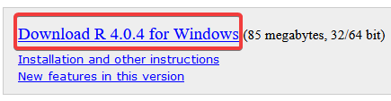
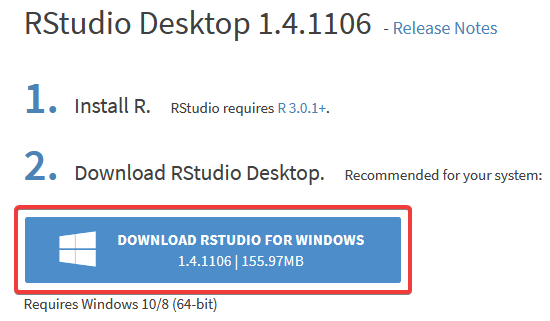

Análisis de Varianza
16/3/2021
Requisitos
Antes de comenzar con el curso es necesario que descarguemos ciertos programas entre ellos están incluidos R y RStudio.
0.1 Descarga de R y RStudio
Tenemos que distinguir entre R y RStudio. Como tal, R es el lenguaje de programación y RStudio es el ambiente de trabajo donde utilizamos este lenguaje de programación.
Para descargar R podemos acceder al link de esta página.

Una vez descargado e instalado R, procedemos a descargar RStudio desde esta página.

Con estas herramientas podemos comenzar a trabajar en RStudio.